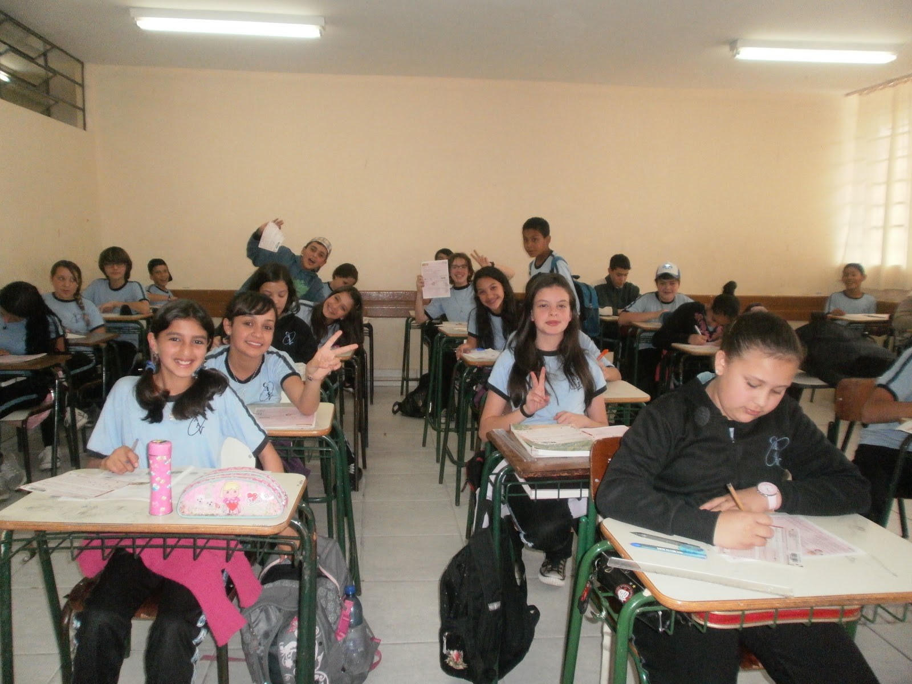

Ensino Fundamental
Formação acadêmica e cidadã para desenvolver habilidades essenciais para a vida escolar.
- Leitura e escrita
- Matemática
- Ciências
- Projetos interdisciplinares
Nossa proposta pedagógica valoriza o conhecimento, a autonomia, a criatividade e o pensamento crítico.
Formação acadêmica e cidadã para desenvolver habilidades essenciais para a vida escolar.
Preparação para o mercado de trabalho, ensino superior e participação cidadã.
Atividades voltadas à cultura digital, informática e pensamento computacional.
